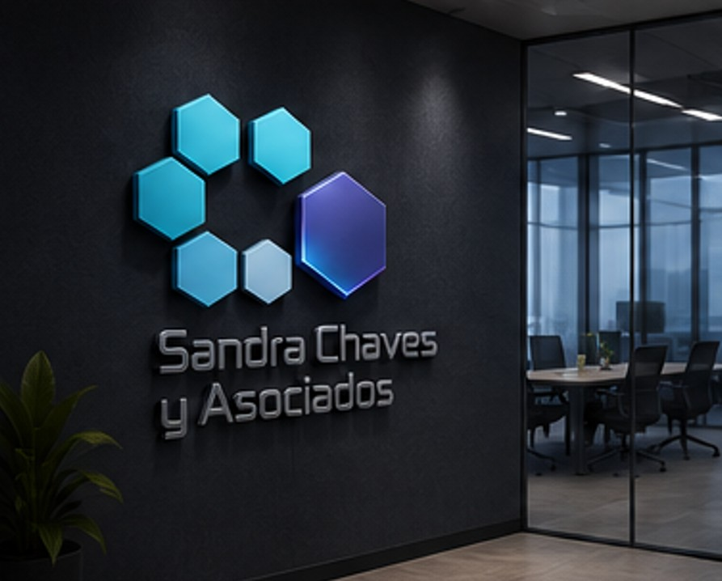
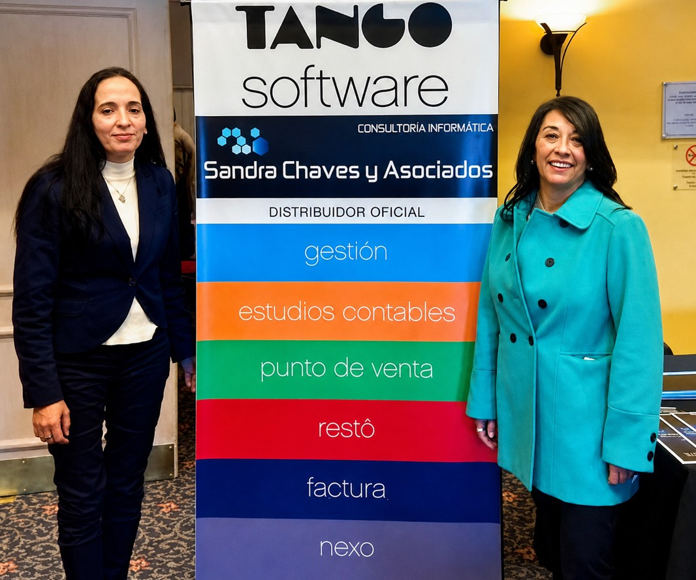

Ing. Sandra Elizabeth Chaves
Egresada de la UTN, lidera la consultora desde 1990. Certificada Tango Gestión Professional y Sueldos Professional, dirige cada relevamiento funcional y acompaña personalmente las implementaciones estratégicas.
Somos Sandra Chaves y Asociados, Distribuidor Oficial Certificado de Tango Software / Axoft. Acompañamos a pymes y empresas en cada etapa: venta, implementación, capacitación, soporte y desarrollo a medida.

La Ing. Sandra Elizabeth Chaves, egresada de la UTN, funda la consultora con una convicción: la tecnología tiene que resolver la operación real de las empresas.
Nos convertimos en Centro de Ventas y Servicios Certificado de Tango Software / Axoft, con certificaciones Tango Gestión Professional y Sueldos Professional.
Se incorpora Paola García, hoy certificada por Axoft, consolidando un equipo que combina experiencia de gestión con especialización técnica.
Más de 200 proyectos en empresas de todo el país y capacitación también en universidades, formando a las nuevas generaciones de usuarios Tango.
Nada de call centers anónimos: cuando nos necesitás, hablás con quien implementó tu sistema.

Egresada de la UTN, lidera la consultora desde 1990. Certificada Tango Gestión Professional y Sueldos Professional, dirige cada relevamiento funcional y acompaña personalmente las implementaciones estratégicas.
Parte del equipo desde 2008. Especialista certificada por Axoft en implementación y soporte del ecosistema Tango: capacitación por rol, migración de datos y acompañamiento post salida en vivo.
Empresas de comercio, industria y servicios que ya ordenaron su gestión con nuestro acompañamiento.
Contamos con más de 200 clientes que confiaron en nosotros: al momento de contactarnos, podemos brindar sus contactos para obtener las mejores referencias.
No permitas que la burocracia o los procesos lentos detengan tu crecimiento. Con el respaldo de Sandra Chaves y asociados y la potencia de Tango Software, tu negocio estará siempre un paso adelante.
¿Estás listo para llevar tu gestión al siguiente nivel?
Sus datos están protegidos bajo certificación SSL. No enviaremos spam.